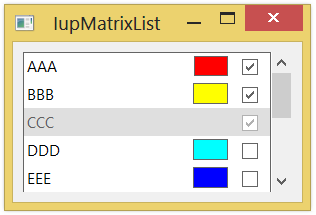

This control uses an array as a list of items. It inherits from IupMatrix. Based on MTXLIB, developed at Tecgraf/PUC-Rio by Renata Trautmann and Andre Derraik.
Necessarily, one of the columns contains the labels, while the other two columns can be used to display colors or images related to the items.
This is an additional control that depends on the CD library. It is included in the Controls Library.
Ihandle* IupMatrixList(void); [in C]
iup.matrixlist{} -> (elem: ihandle) [in Lua]
matrixlist() [in LED]
Returns the identifier of the created matrix, or NULL if an error occurs.
"1":
First item in the list.
"2":
Second item in the list.
"3":
Third item in the list.
...
"id":
idth item in the list.
(non inheritable) Item value. It can be any text. This attribute will hide the IupMatrix L:C attributes.
ADDLIN (write-only): adds a new line to the list after the specified line. To insert a line at the top, value 0 must be used. To add more than one line, use format "L-L", where the first number corresponds to the base line and the second number corresponds to the number of lines to be added. Ignored if set before map.
APPENDITEM (write-only): inserts an item after the last item. Ignored if set before map.
COLORCOL (read-only): returns the number of color column. If not exists, returns 0.
COLUMNORDER: defines or retrieves the display order of the columns. Possible values: "LABEL", "COLOR", "IMAGE". These values also can be combined (no repeat) in these formats: VALUE1:VALUE2 (two columns) or VALUE1:VALUE2:VALUE3 (three columns). For a single column, you can only set the value "LABEL". Default: "LABEL".
COUNT (read-only): returns the number of items. Before mapping it counts the number of non NULL items before the first NULL item.
DELLIN (write-only): removes the given line from the list. To remove more than one line, use format "L-L", where the first number corresponds to the base line and the second number corresponds to the number of lines to be removed. Ignored if set before map.
EDITABLE: set or get the IupMatrixList edit mode. It can be Yes or No. Default: "NO".
FOCUSCOLOR: set a default background color when an item get the focus. Values in RGB format ("r g b"). Default: "255 235 155".
FOCUSITEM: defines the current item cell. Two numbers in the "L:C" format (line:column) where L > 0 and C according to the number of columns available (0 < C < 4). Default: "1:1".
IMAGEid (write-only): image name to be used in the specified item (id). Use IupSetHandle or IupSetAttributeHandle to associate an image to a name. See also IupImage. Image column must be available.
IMAGEACTIVEid: checks if an image is active or not. Image column must be available.
IMAGEADD (write-only): the image name that will be shown when the IupMatrixList is editable. Default: "MTXLIST_IMG_ADD". Use IupSetHandle or IupSetAttributeHandle to associate an image to a name. See also IupImage. Image column must be available.
IMAGECHECK (write-only): the image name that will be shown when the IMAGEVALUE attribute is "IMAGECHECK". Default: "MTXLIST_IMG_CHECK". Use IupSetHandle or IupSetAttributeHandle to associate an image to a name. See also IupImage. Image column must be available.
IMAGECOL (read-only): returns the number of image column. If not exists, returns 0.
IMAGEDEL (write-only): the image name that will be shown when the IupMatrixList is editable and the SHOWDELETE attribute is "YES". Default: "MTXLIST_IMG_DEL". Use IupSetHandle or IupSetAttributeHandle to associate an image to a name. See also IupImage. Image column must be available.
IMAGEUNCHECK (write-only): the image name that will be shown when the IMAGEVALUE attribute is "IMAGEUNCHECK". Default: "MTXLIST_IMG_UNCHECK". Use IupSetHandle or IupSetAttributeHandle to associate an image to a name. See also IupImage. Image column must be available.
IMAGEVALUEid: mark or unmark an item (id) image. It can be "IMAGECHECK" or "IMAGEUNCHECK". Image column must be available.
INSERTITEMid (write-only): inserts an item before the given id position (id starts at 1). If id=COUNT+1 then it will append after the last item. Ignored if out of bounds. Ignored if set before map.
ITEMACTIVEid: active or inactive an item (id). It can be Yes or No. Default: "YES" for all columns.
ITEMFGCOLORid: text color of an item (id).
ITEMBGCOLORid: background color of an item (id).
LABELCOL (read-only): returns the number of label column. If not exists, returns 0.
NUMLIN: defines the number of lines in the list. Must be an integer number. Default: "0". If changed after map will add empty cells or discard cells at the end.
REMOVEITEM (write-only): same as DELLIN attribute.
TITLE: title of the label column.
TOPITEM (write-only): position the given item at the top of the list or near to make it visible.
VALUE: defines or retrieves the value of the current cell. This attribute will hide the IupMatrix VALUE attribute.
VISIBLELINES: defines the number of visible lines for the Natural Size, this means that will act also as minimum number of visible lines. Default: "3".
EXPAND: changed to "NO".
ALIGNMENTLIN0: changed to "ALEFT".
CURSOR: changed to "ARROW".
FRAMETITLEHIGHLIGHT: changed to "NO".
HIDEFOCUS: changed to "YES". Hide the matrix focus feedback, but cell focus will still be processed internally.
SCROLLBAR: changed to "VERTICAL".
These inherited attributes of IupMatrix do nothing, because this control defines automatically the number of columns to be used: ADDCOL, DELCOL, NUMCOL, NUMCOL_NOSCROLL and NUMCOL_VISIBLE.
Attributes not redefined by this control are available for use.
ACTIVE, EXPAND, FONT, SCREENPOSITION, POSITION, MINSIZE, MAXSIZE, WID, TIP, SIZE, RASTERSIZE, ZORDER, VISIBLE: also accepted.
IMAGEVALUECHANGED_CB: called after the image value was interactively changed by the user (mark/unmark).
int function (Ihandle *ih, int lin, int imagevalue); [in C]
elem:imagevaluechanged_cb(lin, imagevalue: number) -> (ret: number) [in Lua]
ih:
identifier of the element that activated the
event.
lin: item line.
imagevalue: equal to 1 if the option was IMAGECHECK or to 0 if the option was
IMAGEUNCHECK.
LISTCLICK_CB: Action generated when any mouse button is pressed over a item.
int function (Ihandle *ih, int lin, char *status); [in C]
elem:listclick_cb(lin: number, status: string) -> (ret: number) [in Lua]
ih:
identifier of the element that activated the
event.
lin: item line.
status: Status of the mouse buttons and some keyboard keys at
the moment the event is generated. The same macros used for
BUTTON_CB can be used for this status.
Returns: To avoid the display update return IUP_IGNORE.
LISTDRAW_CB: Action generated when the state of an item in the list is changed. Also provides information on the changed item:
int function (Ihandle *ih, int lin, int col, int x1, int x2, int y1, int y2, cdCanvas* cnv); [in C]
elem:listdraw_cb(text: string, item, state: number) -> (ret: number) [in Lua]
ih:
identifier of the element that activated the
event.
lin: item line.
col: item column (label, image or color).
x1, x2, y1, y2:
bounding rectangle of the current cell in
pixels, excluding the decorations.
cnv: internal canvas CD used to draw the matrixlist.
Returns: If IUP_IGNORE the normal text drawing will take place.
LISTEDITION_CB: Action generated when the current cell of an item enters or leaves the edition mode.
int function (Ihandle *ih, int lin, int col, int mode, int update); [in C]
elem:listedition_cb(lin, col, mode, update: number) -> (ret: number) [in Lua]
ih:
identifier of the element that activated the
event.
lin: item line.
col: item column (label, image or color).
mode: equal to 1 if the cell has entered the edition mode, or 0
if the cell has left the edition mode.
update: equal to 1 to redraw, or 0 to no update returning
IUP_IGNORE.
LISTINSERT_CB: Action generated when a new line is inserted into the list.
int function (Ihandle *ih, int lin); [in C]
elem:listinsert_cb(lin: number) -> (ret: number) [in Lua]
ih:
identifier of the element that activated the
event.
lin:
position of the new
line.
LISTRELEASE_CB: Action generated when any mouse button is released over a item.
int function (Ihandle *ih, int lin, char *status); [in C]
elem:listrelease_cb(lin: number, status: string) -> (ret: number) [in Lua]
ih:
identifier of the element that activated the
event.
lin: item line.
status: Status of the mouse buttons and some keyboard keys at
the moment the event is generated. The same macros used for
BUTTON_CB can be used for this status.
Returns: To avoid the display update return IUP_IGNORE.
LISTREMOVE_CB: Action generated when a line is removed of the list.
int function (Ihandle *ih, int lin); [in C]
elem:listremove_cb(lin: number) -> (ret: number) [in Lua]
ih:
identifier of the element that activated the
event.
lin:
position of the removed
line.
